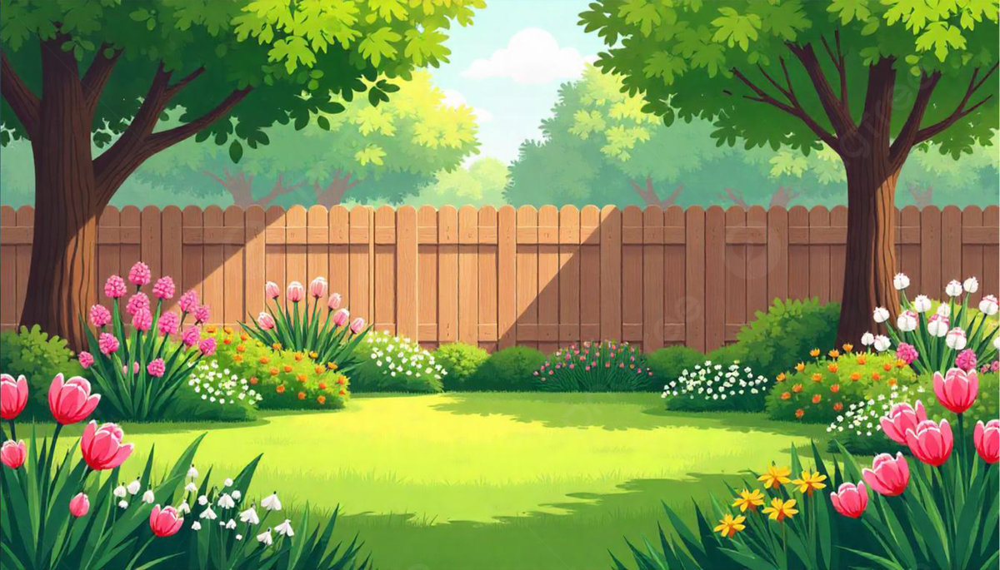
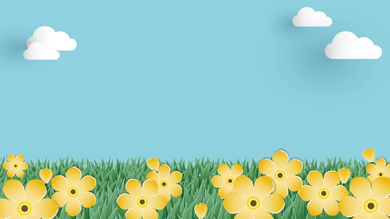

ABOUT US
“We launched Gardenista in 2012 as the definitive guide to stylish, sustainable outdoor spaces. Since then, we've been on a mission to find the best design ideas, from the easiest pollinator-friendly shrubs to grow in the garden to the perfect midcentury house numbers to add for curb appeal. Whether your outdoor space is a city balcony or a sprawling backyard, it's yours to personalize—and we're here to help.
We’re a team of garden obsessives with a mission to demystify outdoor design as well as the nitty gritty of planting and growing. Who better than us to help you on your journey to creating a nature-based landscape that you—and the critters who live there—will love?
Gardens matter. So does your patio, your porch, your front stoop, or your apartment's sunny windowsill. The proof is everywhere: treating the outdoors as a natural extension of living space makes you happier. It doesn’t matter if you’re a neophyte or a master gardener: You can do this.